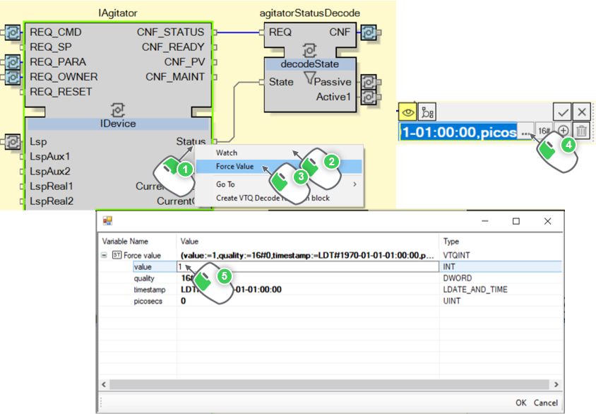
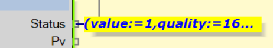

Testing the Filling Sequence
Now that the permissive input of the sequence is TRUE, let’s start it.
However before that, watch all the SeqStep function blocks of the sequence, to see how they are updated.

|
NOTE:
There is a max number of variables watchable. Hence, you shall stop to watch the function blocks not used anymore: the permissive function blocks. Then remove watch of the AND and NOT function blocks. |
Now that everything is ready, trigger StartHead.START, that is what shall happen:
| Variable | Old Value | New Value | Comments |
| StartHead.SeqStopped | TRUE | FALSE |
The sequence started, so it is not stopped anymore. |
| StartHead.SeqRunning | FALSE | TRUE |
The sequence started, so it is now running. |
| Step1.STEP_ENTER | 0 | 1 |
As the sequence started, the first step is entered. |
| Step1.TRANS_REQ | 0 | 1 |
2 seconds after, Step1.TRANS_REQ will turn to 1 because of the timer. |
| Step1.STEP_LEAVE | 0 | 1 |
After having Step1.TRANS_REQ being triggered and the Exceeded value TRUE then the step 1 is left. |
| Step2.STEP_ENTER | 0 | 1 |
As the step 1 is left, it activates the next step, which is Step2. |

|
The sequence worked correctly and achieved with success the first step (even though in practice no ownership of instruments has been taken since TankFillingSequence is not yet connected to any instrument function blocks). |
The sequence is waiting for the transition condition of the step 2 to be TRUE. As no instruments is connected to TankFillingSequence, then it cannot receive any feedback from the instruments adapters. These feedbacks will then be given by forcing values and triggering events.
To move to the third step, the agitator should be turned ON. To do so, the IAgitator adapter must have its Status forced.

|
|
NOTE:
It can happen that the forcing value is not taken into account after having done these steps. Make sure to select OK after entering 1 then to press Enter in the forced value dialog box. |
Once the value of the adapter has been correctly forced, then the port looks like the following image:
|
 |
Once IAgitator.Status is forced, then trigger IAgitator.CNF_STATUS to transmit the forced value to the next function blocks.
|
|
The transition condition of the step 2 is validated. The step 2 is then left and the step 3 started right after. |
Knowing all these actions (Watch, Trigger Event and Force Value), how to navigate inside the CAT and how to manipulate the sequence function blocks, you are now able to finish the testing of the sequence on your own.
|
|
At the end of the step 7, you will be able to see that the sequence correctly stop itself. Starthead.SeqRunning is now equal to FALSE and Starthead.SeqCompleted to TRUE showing then that the sequence has been fully completed. |
|
|
NOTE:
If an issue happens during the testing and you would like to restart the sequence to reset the variables, go to Deploy and Diagnostic and then proceed the following actions: |